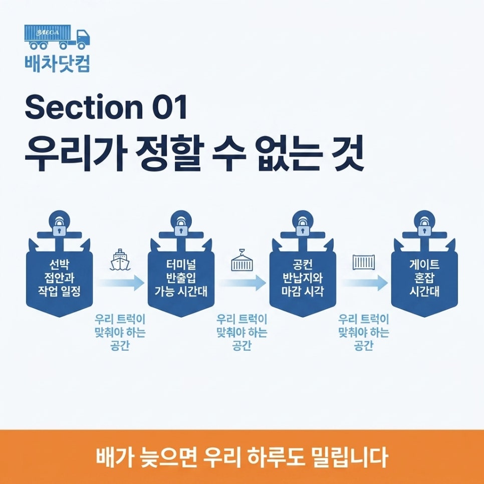
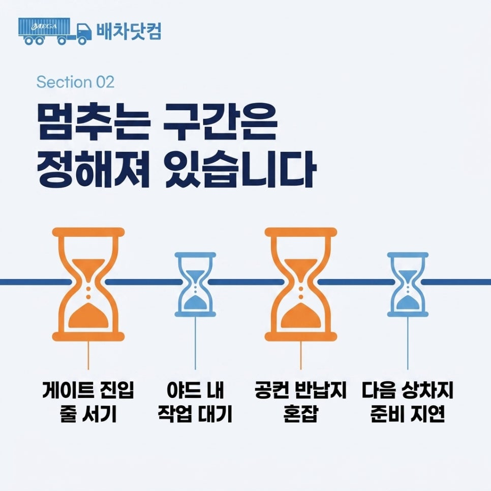
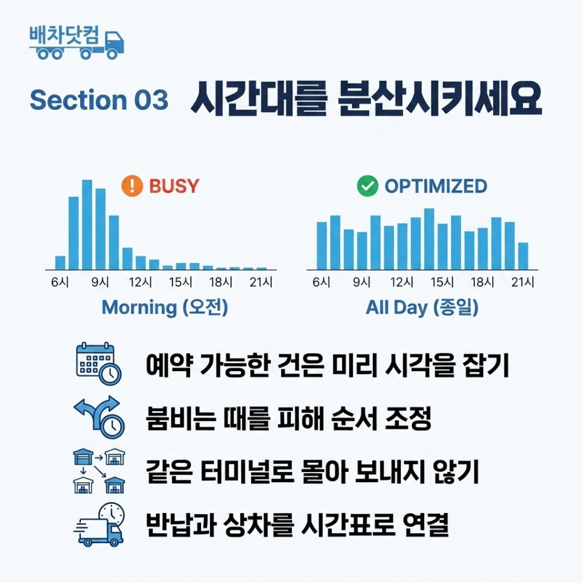
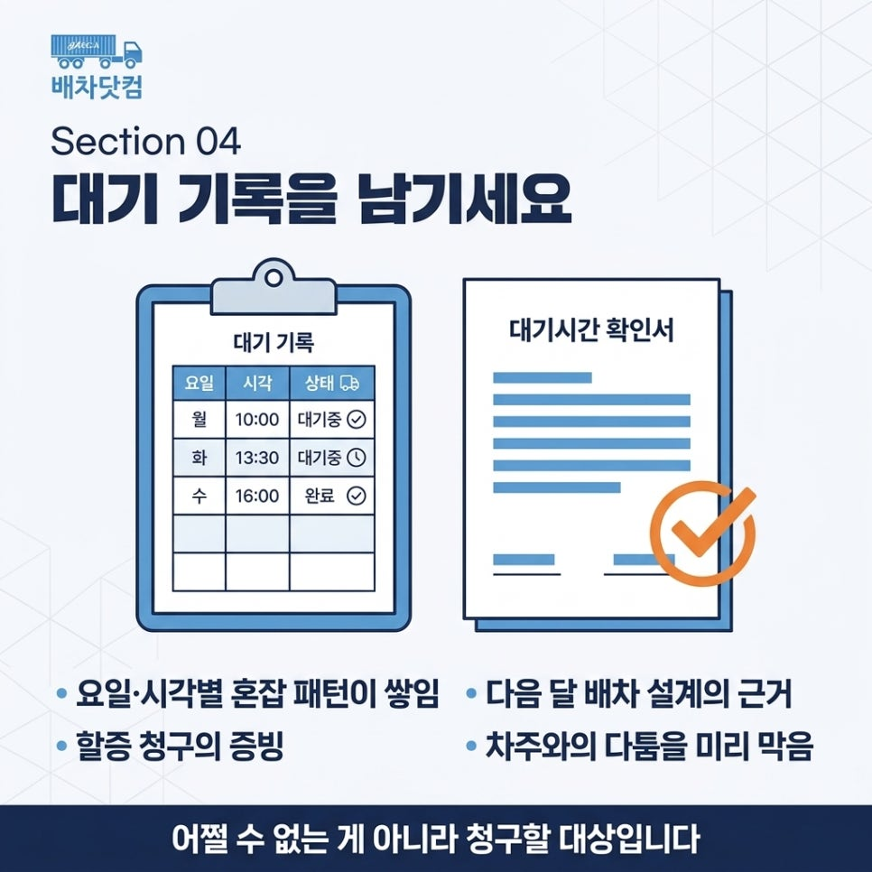
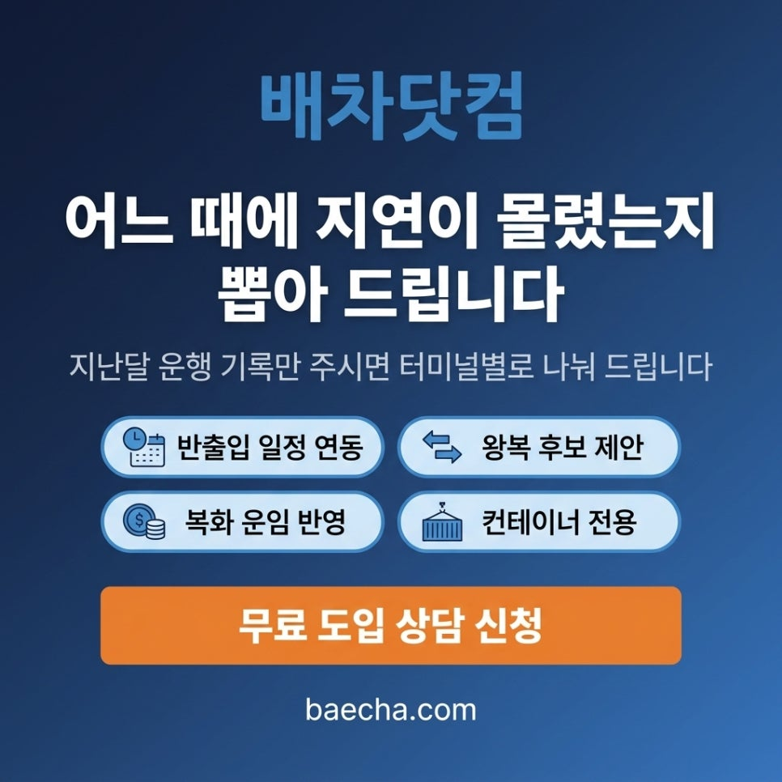

안녕하세요. 컨테이너 수송 전용 관리 도구 배차닷컴을 개발·공급하는 ㈜위솔루션입니다.
게이트 앞에서 두 시간을 서 있으면 그날 회전 하나가 통째로 날아갑니다. 혼잡 자체를 우리가 없앨 수는 없지만, 거기서 잡아먹히는 시간을 줄이는 설계는 가능합니다. 부산항 컨테이너 운송에서 멈춰 서는 구간을 줄이는 방법을 정리했습니다.
Section 01
하루가 어떻게 짜이는지부터

부산항 컨테이너 운송은 일반 화물과 달리, 우리가 정할 수 없는 것들이 맨 앞에 놓입니다.
배가 늦게 들어오면 우리 하루도 같이 밀립니다. 그게 이 일의 기본 조건입니다.
고정된 변수
- 선박 접안과 작업 일정
- 터미널 반출입 가능 시간대
- 공컨 반납지와 마감 시각
- 게이트 혼잡 시간대
이 넷이 먼저 정해지고 그 틈에 우리 차가 들어갑니다. 부산항 컨테이너 운송의 배차가 어려운 이유는 조건이 많아서가 아니라, 그 조건을 우리가 못 바꾸기 때문입니다.
Section 02
대기는 어디서 발생하나

한 건을 처음부터 끝까지 따라가 보면 멈추는 지점이 정해져 있습니다.
네 곳 중 어디서 얼마나 잡아먹히는지 재 보신 적이 있으신가요.
멈추는 구간
- 게이트 진입 줄 서기
- 야드 내 작업 대기
- 공컨 반납지 혼잡
- 다음 상차지 준비 지연
첫 번째와 세 번째가 가장 큽니다. 그리고 이 둘은 언제 가느냐에 따라 편차가 아주 큽니다. 같은 터미널이라도 오전 열 시와 오후 세 시가 완전히 다릅니다. 여기에 손댈 여지가 남아 있다는 뜻입니다.
Section 03
시간대를 분산시키세요

모든 차를 아침에 몰아넣으면 같은 회사 차끼리도 줄을 섭니다. 부산항 컨테이너 운송에서 의외로 흔한 자책골입니다.
같은 시각에 전부 보내면 결국 자기 차가 자기 차를 막는 셈이 됩니다.
- 예약 가능한 건은 미리 시각을 잡기
- 붐비는 때를 피해 배정 순서를 조정
- 같은 터미널로 가는 차를 한꺼번에 안 보내기
- 반납과 상차를 시간표로 연결하기
이 넷만 지켜도 체감이 확 달라집니다. 특히 마지막이 중요합니다. 반납 후 다음 상차까지 비는 구간을 미리 계산해 두면 그 자리에 다른 건을 끼워 넣을 수 있습니다. 하루 회전이 하나 늘어나는 지점입니다.
Section 04
대기 기록을 반드시 남기세요

줄여야 할 대상이면서, 동시에 받아야 할 돈이기도 합니다. 두 가지 성격을 같이 보셔야 합니다.
- 요일과 시각별 혼잡 패턴이 쌓임
- 다음 달 배차 설계의 근거가 됨
- 할증 청구의 증빙이 됨
- 차주와의 다툼을 미리 막아 줌
- 화주에게 지연 사유를 설명할 근거
안전운임 고시에도 대기시간 확인서 서식이 따로 마련돼 있습니다. 근거를 남겨 두라는 뜻이죠. 부산항 컨테이너 운송에서 멈춰 선 시간은 어쩔 수 없는 게 아니라, 관리하고 청구할 대상입니다.
Section 05
왕복 설계와 함께 봐야 합니다

이것만 따로 줄이려 하면 금방 한계가 옵니다. 왕복 설계와 같이 놓고 짜야 합니다.
- 반납지와 다음 상차지의 거리
- 예상 소요까지 포함한 도착 예정
- 복화가 가능한 건인지 여부
- 기사 근무 시간 안에 들어오는지
복화 운송은 안전운임 고시상 왕복운임의 100%가 추가 적용됩니다. 묶을 수 있으면 묶는 쪽이 수익 면에서도 확실히 유리합니다. 다만 컨테이너 교체 여부에 따라 복화 사용료 부담이 달라지니 계약서에 미리 정해 두셔야 합니다.
배차닷컴은 화물정보망 인증과 화물운송실적신고(FPIS) 대행업체 인증을 갖춘 컨테이너 전용 도구입니다. 반출입 일정과 배차 화면이 붙어 있어 시간대 분산과 왕복 후보를 함께 잡아 줍니다.
지난달 운행 기록만 주시면 어느 때에 지연이 몰렸는지 뽑아 드립니다. 터미널별로 나눠서 보여 드립니다. 부산항 컨테이너 운송은 물량을 더 받아 오기 전에, 지금 하루를 촘촘하게 만드는 쪽이 먼저입니다.
이 글은 네이버 블로그에 먼저 실린 글입니다.